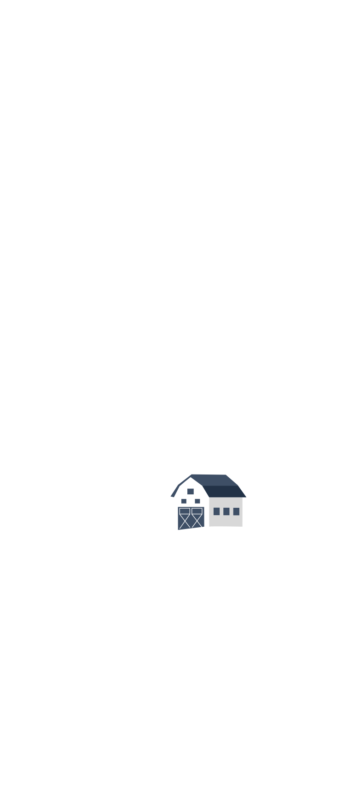
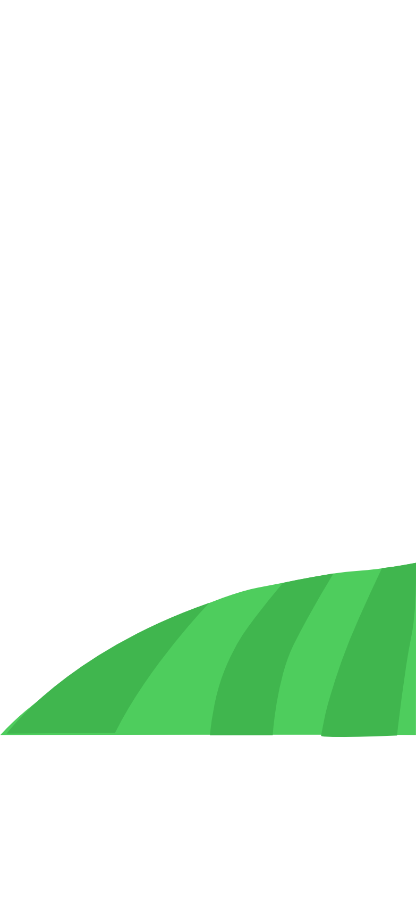
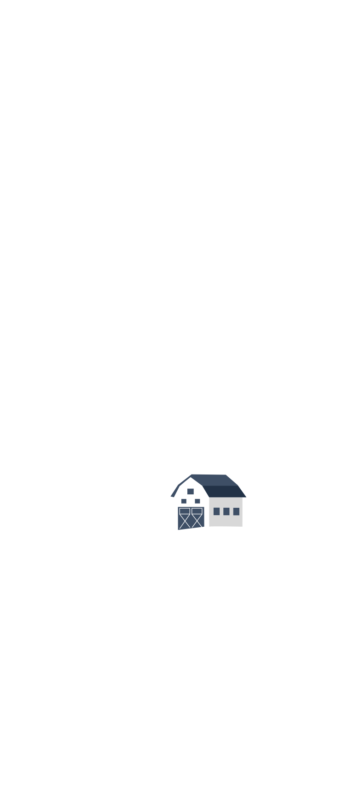
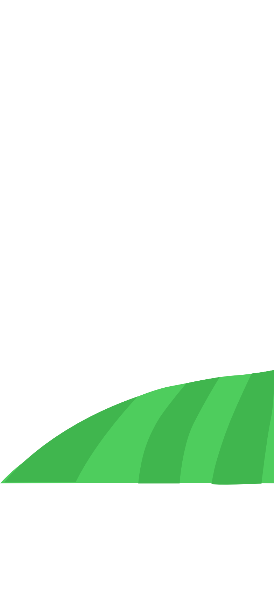

Ons vertrekpunt is dat een groot deel van een gemeente bestaat uit private grond (tuinen, daken, bedrijventerreinen) en dat het absoluut noodzakelijk is dat deze private ruimte klimaatadaptief ingericht moet worden. Elk perceel vraagt om maatwerk, maar het is onmogelijk om elke tuin in te gaan.
Samen vinden we een antwoord op deze vragen.
Schoon water is een eerste levensbehoefte en essentieel voor een toekomstbestendig Nederland. Toch voldoen nog steeds ongeveer 90 procent van alle oppervlaktewateren niet aan de normen. Deze normen zijn al jarenlang door Nederland zelf vastgesteld vanuit Europese regelgeving. We staan nu echter op een keerpunt.
Binnen 5 jaar, in 2027, moeten alle oppervlaktewateren voldoen aan de ecologische en chemische richtlijnen. Vergelijkingen met de stikstofcrisis zijn snel gemaakt. Maar wat is de KRW nou precies? En wat heeft mijn organisatie er mee te maken?
De focus lag op het voorkomen van wateroverlast, droogte, hittestress, het ontlasten van het riool en het bevorderen van de biodiversiteit.
Lees meerSPATwater heeft met hulp van studenten van de MSc MADE, Green Business Club, Samen Klimaatbestendig, Waternet en de gemeente amsterdam de online tool vergroenjewerk.nl ontwikkeld.
Lees meerDe focus lag op het voorkomen van wateroverlast, droogte, hittestress, het ontlasten van het riool en het bevorderen van de biodiversiteit.
Lees meer